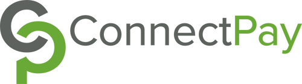

Hello, I’m Cassie! I’m a computer science graduate with experience in software quality assurance,
automated testing, and web application development. During my time at Skidmore College, I combined
academics, research, leadership, and four years as a collegiate athlete, which strengthened my problem-solving,
communication, and ability to stay disciplined under pressure.
I’m especially interested in QA engineering, software development, and roles where I can contribute to building
reliable, user-focused technology. Outside of tech, I enjoy running, working with animals, and creative projects.
What I’m Looking For
I’m currently seeking entry-level opportunities in QA engineering, software testing, software development,
and related technical roles where I can continue building my skills in automation, debugging, and collaborative product development.
2023 Faculty-Student Summer Research Presentation
On the court
2022 Academic Festival Presentation
Technical Skills
Languages: Python, Java, JavaScript, HTML/CSS, SQL, C++
Relevant Coursework: Algorithms, Data Structures, Databases, Software Engineering, Mobile Computing, Programming Languages
Experience
My background includes QA, software development, academic research, and leadership experiences that reflect both technical ability and strong collaboration skills.
Professional Experience
Development Intern, ConnectPay Payroll Services
Languages: Java
Summer 2024
(June 2024 - August 2024)
• Developed and executed automated QA test cases using Selenium WebDriver.
• Contributed testing work within a DevOps pipeline to support consistent regression testing.
• Helped improve the reliability of an updated web application by identifying, documenting, and communicating defects.

Computer Science Peer Academic Coach Captain, Skidmore College
Languages: Python, Java
Fall 2022 - Spring 2025
(September 2022 - May 2025)
• Led and organized meetings with other Computer Science Peer Academic Coaches.
• Participated in training to strengthen tutoring practices and student support strategies.
• Worked with students across multiple course levels to build understanding of computer science concepts.
• Encouraged student growth and confidence through positive reinforcement and feedback.
Computer Science Teaching Assistant, Skidmore College
Language: Python
Fall 2022 - Spring 2023
(September 2022 - May 2023)
• Facilitated collaborative learning for 25 peers in weekly 3-hour lab sessions for an Intro to Computer Science course.
• Provided hands-on assistance and guidance in Python programming.
• Fostered an engaging environment where students felt comfortable asking questions and seeking support.
• Built a tool to scrape and analyze eBay sold listing data for product pricing research.
• Used Puppeteer to collect listing information and Python/FastAPI to process and display pricing insights such as median and average sold prices.
• Designed the project to support real-world resale decisions and strengthen skills in debugging, automation, and web application development.
Exploring Canine Sexual Selection: A GRFP Proposal (Unsubmitted)
Spring 2025
(January 2025 - May 2025)
• Completed an NSF GRFP-style research proposal for a Sexual Selection course project.
• Explored canine sexual selection and the role of human influence on mate choice.
• Completed a collaborative research project focused on children’s understanding of online safety.
• Researched online safety concepts and relevant laws, then helped brainstorm and build an educational app.
• Applied React Native, HTML, and JavaScript to design a social media app concept promoting safe online interactions and privacy awareness.
• Presented the project at the Skidmore summer faculty-student research symposium.
• Completed semester-long research examining perspectives on genetic testing and genome manipulation.
• Read academic literature and developed a literature review based on research findings.
Computer Science Research Assistant, Skidmore College
Languages: Python, Swift
Spring 2022
(March 2022 - May 2022)
• Assisted in a research project focused on problematic smartphone use and presented findings at Skidmore Academic Festival 2022.
• Conducted a pilot user study using Qualtrics and summarized results using Python-generated graphs from CSV data.
• Contributed to a poster presentation based on testing the usage and effectiveness of an iPhone app.
• Balanced a full course load with 30 hours per week of training, practice, film, and travel.
• Developed leadership, discipline, and time-management skills through collegiate athletics.
• Helped the team win the Liberty League Championship in 2023.
Youth Basketball Coach, Skidmore College
July 2021, 2022, 2023, 2024
• Designed and led daily basketball drills and practice sessions for groups of 20+ campers ages 8–14.
• Fostered a positive, inclusive environment focused on teamwork, skill development, and sportsmanship.
• Provided feedback to campers and communicated progress to parents.
Honors & Awards
Magna Cum Laude
Skidmore College, May 2025
Graduated with high honors, awarded to students who achieve a cumulative GPA of 3.75 to 3.89, demonstrating consistent academic excellence throughout their undergraduate career.
Dean's List
Skidmore College, Fall 2021, Fall 2022, Spring 2023, Fall 2023, Spring 2024
Given to students who satisfactorily complete at least 14 semester hours of credit and achieve a 3.650 GPA for that semester.
Academic All District Basketball Team
NCAA D3 Women's Basketball, February 2023, 2024, 2025
Awarded to top student-athletes for combined performance on the court and in the classroom.
Thoroughbred Society
Skidmore College Athletics, Fall 2021, Fall 2022, Spring 2023, Fall 2023, Spring 2024
The Thoroughbred Society recognizes Skidmore College varsity student-athletes who achieved a grade point average of 3.67 or higher the previous semester.
Schupf Scholar Program
Skidmore College, May 2023
Awarded to female students in science fields where they are underrepresented and who complete 10 weeks of summer research.
Maureen E. Bucken Girls’ Athletic Award
Thayer Academy, May 2021
Given to female athletes who demonstrate selflessness, friendliness, and good sportsmanship.